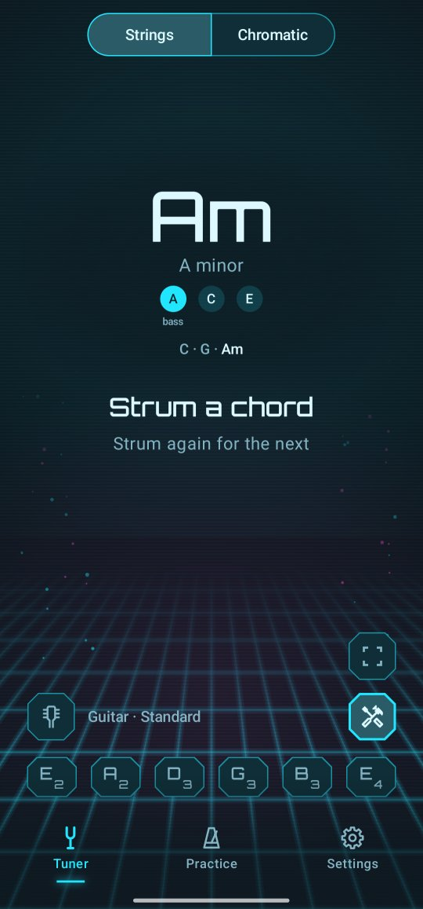

Chord name
Strum a chord and Twangle names it. Handy to find out what you just played, to check a chord you are learning, or to work out a song by ear.
Name a chord
- Tap the tools button above the strings (three tiles and a plus) and pick Chord name.
- Strum a chord, all the strings of it, and let it ring.
- After about a second its name shows: the symbol big, for example Am, its name in words under it, A minor, and its notes, with the lowest one marked bass.
- Strum the next one. The last three chords stay along the bottom.
When the strings die away, the name stays, faded, until the next chord.
Which chords it knows
Major and minor chords, the seventh, major seventh and minor seventh, sus2 and sus4, the power chord (E5), the 7♯9 and the minor and major ninth, each from any note. When the lowest note isn't the chord's own, it says so: C/E, C major, E in the bass.
When a strum isn't clearly one chord, Twangle says Not a clear chord. It never guesses. Strum all the strings of the chord, and mute the ones that don't belong to it.
The notes are written the way you set in Settings → Note names: letters with sharps or flats, German (H for B), or Do Re Mi.
Good to know
- It works on the guitar (6, 7 and 8 strings), the ukulele, the mandolin and the banjo. The 12-string's octave strings ring too close together, and bass and bowed instruments rarely play chords.
- An instrument a little out of tune as a whole, or tuned to another reference pitch, is still named right; tune it anyway for the best results.
- Switching to Chromatic, tapping a string, or tapping the Tuner tab ends the chord name.
For the curious: how a chord is named
Unlike the strum check, here Twangle doesn't know which notes to expect: a chord can put any note on any string, leave strings out and double others. So it finds the notes first. A note sounds with its harmonics, at two, three, four times its pitch, and those land on other notes: the third harmonic of an E is a B, the fifth a G♯. Simply adding up all the sound per note would turn an E power chord into E major.
So Twangle takes the strongest note, removes its harmonics from the sound, and looks again for the next, until only faint sound is left (iterative estimation and cancellation, after Anssi Klapuri, 2003 and 2006). The notes it found are matched against the chords it knows. Twangle reads the chord ten times a second, and a name shows once it wins four of the last six readings, so one stray reading never changes it.
